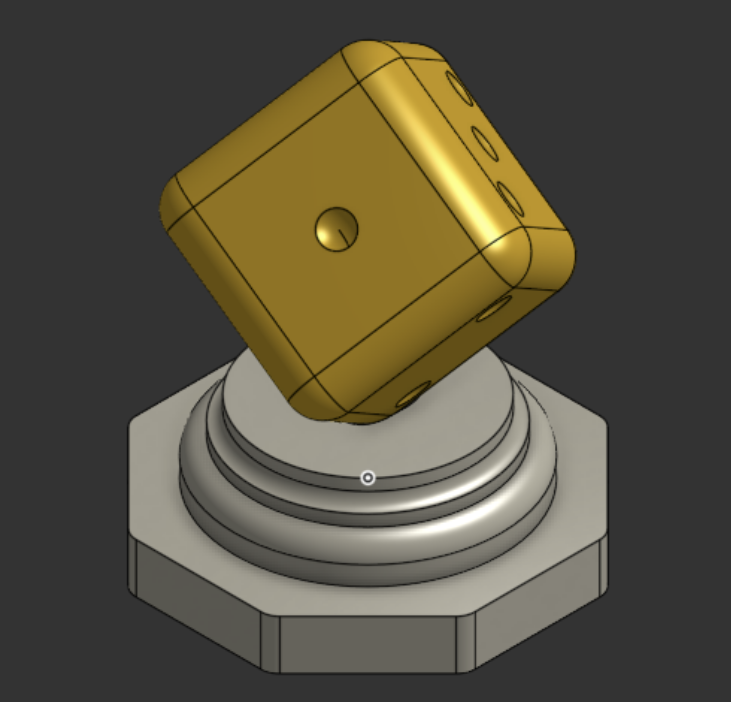

📌 Synthèse élève — Dessiner un objet pour qu'une machine le fabrique
L'atelier CAO, de la 5e à la 3e : le dé, le dé en mieux, le dé sur sa pointe, le boîtier étanche.
🧠 Ce que je dois retenir
Comment décrire un objet assez précisément pour qu'une machine le fabrique sans nous ?
Ce que dit le programme (compétence C7) :
5e : mettre en œuvre les moyens pour réaliser une forme selon une procédure fournie ; fabriquer une solution pour améliorer un OST existant.
4e : modifier une forme à l’aide d’une modélisation ; proposer et fabriquer une solution pour ajouter une nouvelle fonction à un OST (croquis, schéma, graphique, algorithme, modélisation).
3e : modéliser une forme voulue ; proposer et fabriquer un ensemble de solutions pour produire un nouvel OST (croquis, schéma, graphique, algorithme, modélisation).

📍 Le dé de 5e, posé sur le socle de 4e. Capture d'écran.
2. Quels gestes apprends-tu, d'une année à l'autre ?
Quatre TP, un même logiciel. Chaque année ajoute ses gestes à ceux d'avant :
5e : suivreLe dé : esquisser, coter, extruder, enlever de la matière, arrondir.
5e : améliorerLe dé, en mieux : un plan décalé, une sphère qui creuse.
4e : modifierLe dé sur sa pointe : des variables, la révolution, un Booléen.
3e : modéliserLe boîtier : la coque, la rainure, l'assemblage, la vue en coupe.
🧠 À retenir : les gestes s'ajoutent d'une année à l'autre, mais le vrai
changement est le verbe. En 5e, tu suis une procédure ; en 3e, tu pars d'un besoin.
⚠️ Le piège : croire qu'un geste nouveau remplace l'ancien. En 3e, le boîtier commence encore
par l'extrusion d'un pavé.
Dans une esquisse, la couleur du trait dit où tu en es :
Trait bleuEncore libre : il lui manque une cote ou une contrainte.
Trait noirFixé : plus rien ne le déplacera. Sur fond sombre, il est blanc.
Un cercle jamais coté ✘Sur un dé au rendu parfait, il mesurait 9,917 mm au lieu de 10.
🧠 À retenir : une esquisse est finie quand tous ses traits sont fixés par
des cotes et des contraintes. Une image qui a l'air juste ne suffit pas : c'est la cote qui fixe la taille.
⚠️ Le piège : dessiner « à peu près ». Un trait libre se déplace au premier
clic, sans prévenir.